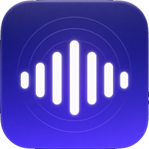

Hear your own mic through your headphones, from the macOS menu bar.
Sidetone sends any input to whatever output you pick. Usually that means hearing your own microphone while you talk, but a line-in works just as well.
Capture and playback run on independent clocks, joined by a ring buffer that corrects for drift, so a USB mic into Bluetooth headphones keeps working instead of slowly falling apart.
Sidetone isn't notarized, so macOS blocks it the first time you open it. Click Done on the warning rather than Move to Trash, then open System Settings, go to Privacy & Security, and click "Open Anyway". The longer version.